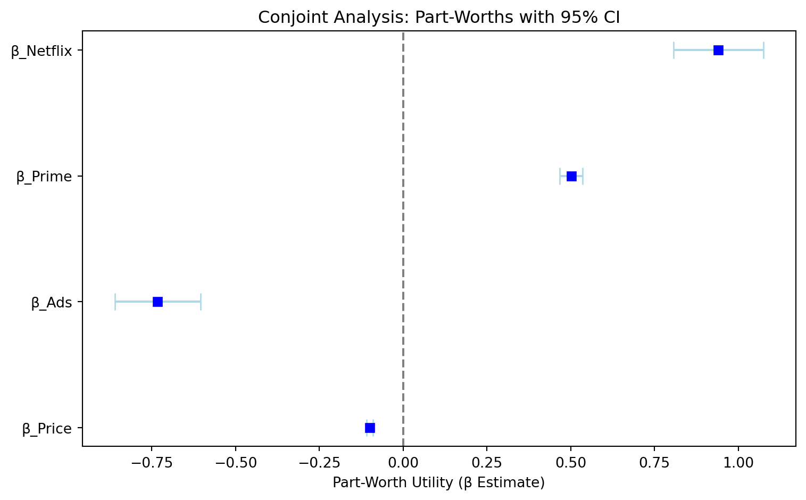
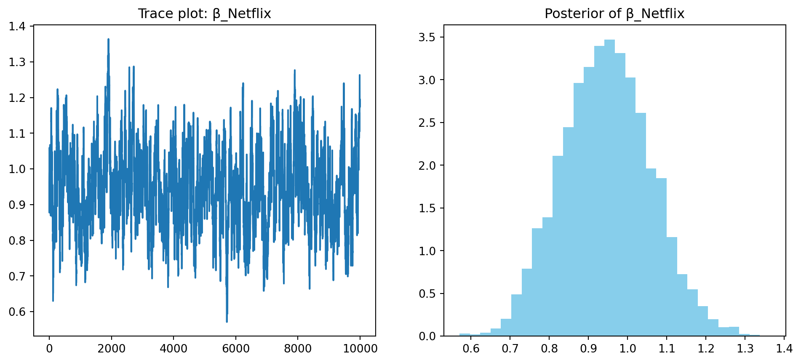

import numpy as np
import pandas as pd
np.random.seed(42)
brands = ['N', 'P', 'H']
ads = ['Yes', 'No']
prices = list(range(8, 33, 4))
from itertools import product
profiles = list(product(brands, ads, prices))
profiles_df = pd.DataFrame(profiles, columns=['brand', 'ad', 'price'])
m = len(profiles_df)
b_util = {'N': 1.0, 'P': 0.5, 'H': 0.0}
a_util = {'Yes': -0.8, 'No': 0.0}
p_util = lambda p: -0.1 * p
n_peeps = 100
n_tasks = 10
n_alts = 3
def simulate_one(id):
data = []
for t in range(1, n_tasks + 1):
alts = profiles_df.sample(n=n_alts).copy()
alts['resp'] = id
alts['task'] = t
alts['v'] = alts['brand'].map(b_util) + alts['ad'].map(a_util) + alts['price'].apply(p_util)
e = -np.log(-np.log(np.random.uniform(size=n_alts)))
alts['u'] = alts['v'] + e
alts['choice'] = (alts['u'] == alts['u'].max()).astype(int)
data.append(alts[['resp', 'task', 'brand', 'ad', 'price', 'choice']])
return pd.concat(data)
conjoint_data = pd.concat([simulate_one(i) for i in range(1, n_peeps + 1)], ignore_index=True)Multinomial Logit Model
This assignment expores two methods for estimating the MNL model: (1) via Maximum Likelihood, and (2) via a Bayesian approach using a Metropolis-Hastings MCMC algorithm.
1. Likelihood for the Multi-nomial Logit (MNL) Model
Suppose we have \(i=1,\ldots,n\) consumers who each select exactly one product \(j\) from a set of \(J\) products. The outcome variable is the identity of the product chosen \(y_i \in \{1, \ldots, J\}\) or equivalently a vector of \(J-1\) zeros and \(1\) one, where the \(1\) indicates the selected product. For example, if the third product was chosen out of 3 products, then either \(y=3\) or \(y=(0,0,1)\) depending on how we want to represent it. Suppose also that we have a vector of data on each product \(x_j\) (eg, brand, price, etc.).
We model the consumer’s decision as the selection of the product that provides the most utility, and we’ll specify the utility function as a linear function of the product characteristics:
\[ U_{ij} = x_j'\beta + \epsilon_{ij} \]
where \(\epsilon_{ij}\) is an i.i.d. extreme value error term.
The choice of the i.i.d. extreme value error term leads to a closed-form expression for the probability that consumer \(i\) chooses product \(j\):
\[ \mathbb{P}_i(j) = \frac{e^{x_j'\beta}}{\sum_{k=1}^Je^{x_k'\beta}} \]
For example, if there are 3 products, the probability that consumer \(i\) chooses product 3 is:
\[ \mathbb{P}_i(3) = \frac{e^{x_3'\beta}}{e^{x_1'\beta} + e^{x_2'\beta} + e^{x_3'\beta}} \]
A clever way to write the individual likelihood function for consumer \(i\) is the product of the \(J\) probabilities, each raised to the power of an indicator variable (\(\delta_{ij}\)) that indicates the chosen product:
\[ L_i(\beta) = \prod_{j=1}^J \mathbb{P}_i(j)^{\delta_{ij}} = \mathbb{P}_i(1)^{\delta_{i1}} \times \ldots \times \mathbb{P}_i(J)^{\delta_{iJ}}\]
Notice that if the consumer selected product \(j=3\), then \(\delta_{i3}=1\) while \(\delta_{i1}=\delta_{i2}=0\) and the likelihood is:
\[ L_i(\beta) = \mathbb{P}_i(1)^0 \times \mathbb{P}_i(2)^0 \times \mathbb{P}_i(3)^1 = \mathbb{P}_i(3) = \frac{e^{x_3'\beta}}{\sum_{k=1}^3e^{x_k'\beta}} \]
The joint likelihood (across all consumers) is the product of the \(n\) individual likelihoods:
\[ L_n(\beta) = \prod_{i=1}^n L_i(\beta) = \prod_{i=1}^n \prod_{j=1}^J \mathbb{P}_i(j)^{\delta_{ij}} \]
And the joint log-likelihood function is:
\[ \ell_n(\beta) = \sum_{i=1}^n \sum_{j=1}^J \delta_{ij} \log(\mathbb{P}_i(j)) \]
2. Simulate Conjoint Data
We will simulate data from a conjoint experiment about video content streaming services. We elect to simulate 100 respondents, each completing 10 choice tasks, where they choose from three alternatives per task. For simplicity, there is not a “no choice” option; each simulated respondent must select one of the 3 alternatives.
Each alternative is a hypothetical streaming offer consistent of three attributes: (1) brand is either Netflix, Amazon Prime, or Hulu; (2) ads can either be part of the experience, or it can be ad-free, and (3) price per month ranges from $4 to $32 in increments of $4.
The part-worths (ie, preference weights or beta parameters) for the attribute levels will be 1.0 for Netflix, 0.5 for Amazon Prime (with 0 for Hulu as the reference brand); -0.8 for included adverstisements (0 for ad-free); and -0.1*price so that utility to consumer \(i\) for hypothethical streaming service \(j\) is
\[ u_{ij} = (1 \times Netflix_j) + (0.5 \times Prime_j) + (-0.8*Ads_j) - 0.1\times Price_j + \varepsilon_{ij} \]
where the variables are binary indicators and \(\varepsilon\) is Type 1 Extreme Value (ie, Gumble) distributed.
The following code provides the simulation of the conjoint data.
3. Preparing the Data for Estimation
The “hard part” of the MNL likelihood function is organizing the data, as we need to keep track of 3 dimensions (consumer \(i\), covariate \(k\), and product \(j\)) instead of the typical 2 dimensions for cross-sectional regression models (consumer \(i\) and covariate \(k\)). The fact that each task for each respondent has the same number of alternatives (3) helps. In addition, we need to convert the categorical variables for brand and ads into binary variables.
import pandas as pd
import numpy as np
import os
np.random.seed(42)
conjoint = pd.read_csv('conjoint_data.csv')
conjoint
X = pd.get_dummies(conjoint[['brand', 'ad']], drop_first=True)
X['price'] = conjoint['price']
X['choice'] = conjoint['choice']
X['resp'] = conjoint['resp']
X['task'] = conjoint['task']
X = X.rename(columns={
'brand_N': 'is_Netflix',
'brand_P': 'is_Prime',
'ad_Yes': 'has_Ads'
})
X.head(6)| is_Netflix | is_Prime | has_Ads | price | choice | resp | task | |
|---|---|---|---|---|---|---|---|
| 0 | True | False | True | 28 | 1 | 1 | 1 |
| 1 | False | False | True | 16 | 0 | 1 | 1 |
| 2 | False | True | True | 16 | 0 | 1 | 1 |
| 3 | True | False | True | 32 | 0 | 1 | 2 |
| 4 | False | True | True | 16 | 1 | 1 | 2 |
| 5 | True | False | True | 24 | 0 | 1 | 2 |
4. Estimation via Maximum Likelihood
def mnl_log_likelihood(beta, X, y, group_ids):
ll = 0.0
unique_groups = np.unique(group_ids)
for gid in unique_groups:
idx = group_ids == gid
Xg = X[idx] # 3 × 4
yg = y[idx] # 3 × 1
utilities = Xg @ beta
exp_util = np.exp(utilities)
probs = exp_util / np.sum(exp_util)
ll += np.sum(np.log(probs[yg == 1]))
return -llWe estimated the multinomial logit (MNL) model using maximum likelihood via the BFGS optimization method. The model included four attributes: brand (with dummy variables for Netflix and Prime, and Hulu as the baseline), ad presence (dummy for “Yes”), and price as a continuous variable.
from scipy.optimize import minimize
x = X[['is_Netflix', 'is_Prime', 'has_Ads', 'price']].astype(float).values
y = X['choice'].values
group_ids = (X['resp'].astype(str) + '-' + X['task'].astype(str)).values
init_beta = np.zeros(4)
res = minimize(
mnl_log_likelihood,
x0=init_beta,
args=(x, y, group_ids),
method='BFGS'
)
beta_hat = res.x
hessian_inv = res.hess_inv
se = np.sqrt(np.diag(hessian_inv))
z = 1.96 # for 95% CI
ci_lower = beta_hat - z * se
ci_upper = beta_hat + z * se
params = ['β_Netflix', 'β_Prime', 'β_Ads', 'β_Price']
for i in range(4):
print(f"{params[i]} = {beta_hat[i]:.3f} ± {z*se[i]:.3f} → [{ci_lower[i]:.3f}, {ci_upper[i]:.3f}]")β_Netflix = 0.941 ± 0.134 → [0.807, 1.075]
β_Prime = 0.502 ± 0.034 → [0.468, 0.535]
β_Ads = -0.732 ± 0.128 → [-0.860, -0.604]
β_Price = -0.099 ± 0.009 → [-0.109, -0.090]The coefficient for Netflix is the highest, indicating that, holding all else constant, consumers derive more utility from a Netflix subscription relative to the baseline (Hulu). The coefficient for Prime is also positive, though lower than Netflix, suggesting intermediate preference. The negative coefficient for Ads confirms that the presence of advertisements significantly reduces utility. Finally, price has a negative coefficient, which aligns with standard economic theory that consumers prefer lower prices.
These results are further visualized in the coefficient plot below, where each point represents a parameter estimate and the horizontal lines indicate the 95% confidence intervals. All four parameters are statistically significant and directionally consistent with expectations, with confidence intervals that do not cross zero.

This analysis demonstrates that the MNL model successfully recovers intuitive patterns of consumer preferences across different attribute levels.
5. Estimation via Bayesian Methods
To estimate the posterior distribution of the part-worth parameters, we implemented a Metropolis-Hastings Markov Chain Monte Carlo (MCMC) sampler. The proposal distribution for the sampler was a multivariate normal with zero mean and diagonal covariance, corresponding to four independent normal proposals: three with standard deviation 0.05 (for the binary variables: brand and ad), and one with standard deviation 0.005 (for the continuous price variable). The priors for the parameters were set as:
- \(\beta_{\text{Netflix}},\ \beta_{\text{Prime}},\ \beta_{\text{Ads}} \sim \mathcal{N}(0,\ 5^2)\)
- \(\beta_{\text{Price}} \sim \mathcal{N}(0,\ 1^2)\)
We ran the sampler for 11,000 iterations and discarded the first 1,000 as burn-in, retaining the remaining 10,000 samples to approximate the posterior distribution.
def log_likelihood(beta, X, y, group_ids):
ll = 0.0
for gid in np.unique(group_ids):
idx = group_ids == gid
Xg = X[idx]
yg = y[idx]
util = Xg @ beta
probs = np.exp(util) / np.sum(np.exp(util))
ll += np.log(probs[yg == 1])
return lldef log_prior(beta):
# beta: [β_Netflix, β_Prime, β_Ads, β_Price]
logp = 0
logp += -0.5 * (beta[0]**2) / 25 # N(0,5²)
logp += -0.5 * (beta[1]**2) / 25
logp += -0.5 * (beta[2]**2) / 25
logp += -0.5 * (beta[3]**2) / 1 # N(0,1²)
return logp
def log_posterior(beta, X, y, group_ids):
return log_likelihood(beta, X, y, group_ids) + log_prior(beta)
def metropolis_sampler(X, y, group_ids, n_draws=11000):
np.random.seed(42)
beta_current = np.zeros(4)
samples = []
acc = 0
for i in range(n_draws):
# proposal: 4 independent normals
proposal = beta_current + np.random.normal(loc=0, scale=[0.05, 0.05, 0.05, 0.005])
# compute log-posterior
log_post_curr = log_posterior(beta_current, X, y, group_ids)
log_post_prop = log_posterior(proposal, X, y, group_ids)
# acceptance probability
log_alpha = log_post_prop - log_post_curr
if np.log(np.random.rand()) < log_alpha:
beta_current = proposal
acc += 1
samples.append(beta_current.copy())
print(f"Acceptance rate: {acc/n_draws:.3f}")
return np.array(samples[1000:]) # burn-in: discard first 1000The acceptance rate of the sampler was approximately 56.7%, which indicates good mixing without excessive rejection. Summary statistics of the posterior draws are shown below:
samples = metropolis_sampler(x, y, group_ids)
param_names = ['β_Netflix', 'β_Prime', 'β_Ads', 'β_Price']
for i in range(4):
mean = samples[:, i].mean()
sd = samples[:, i].std()
ci = np.percentile(samples[:, i], [2.5, 97.5])
print(f"{param_names[i]}: mean={mean:.3f}, sd={sd:.3f}, 95% CI={ci}")Acceptance rate: 0.567
β_Netflix: mean=0.946, sd=0.113, 95% CI=[0.73207093 1.17071416]
β_Prime: mean=0.507, sd=0.114, 95% CI=[0.28823335 0.7350442 ]
β_Ads: mean=-0.733, sd=0.083, 95% CI=[-0.89090517 -0.56675583]
β_Price: mean=-0.100, sd=0.006, 95% CI=[-0.11186317 -0.0873375 ]The posterior means are nearly identical to the MLE estimates obtained earlier, and the posterior standard deviations align closely with the standard errors from the MLE. This consistency confirms the convergence and validity of the Bayesian approach.
Below, we present a trace plot and posterior histogram for β_Netflix, which demonstrate both good convergence and approximately normal posterior shape:
plt.figure(figsize=(12, 5))
# trace
plt.subplot(1, 2, 1)
plt.plot(samples[:, 0])
plt.title("Trace plot: β_Netflix")
# posterior histogram
plt.subplot(1, 2, 2)
plt.hist(samples[:, 0], bins=30, density=True, color='skyblue')
plt.title("Posterior of β_Netflix")
plt.show()
These diagnostics suggest that the MCMC sampler is well-calibrated and effectively captures the uncertainty in the parameter estimates. The posterior distributions provide a full probabilistic characterization of the model parameters, offering richer information than point estimates alone.
Overall, the Bayesian estimates reaffirm the conclusions drawn from the MLE approach, while offering additional insight into the uncertainty and shape of the posterior distributions.
6. Discussion
Interpreting Estimated Preferences
When interpreting the estimated coefficients from the multinomial logit model, we observe that the utility weight for Netflix is substantially higher than that for Prime, indicating that, all else equal, respondents have a stronger preference for Netflix over Prime. This ranking is consistent with expectations in a realistic streaming market where Netflix is often perceived as offering superior content or usability.
The coefficient on Ads is negative, suggesting that respondents derive lower utility from ad-supported offerings compared to ad-free experiences. This aligns well with known consumer aversion to advertising interruptions in digital media consumption.
In addition, the coefficient for Price is negative, which is both statistically significant and economically intuitive: higher prices reduce utility, making the option less attractive. The monotonic relationship between price and utility is a foundational assumption in discrete choice models, and our estimates support this behavior.
Taken together, these results offer a coherent picture of consumer preferences: respondents tend to favor Netflix over Prime and Hulu (the omitted baseline), prefer content without ads, and exhibit price sensitivity. Importantly, these preferences emerge solely from the observed choice data, without requiring knowledge of how the data was originally simulated.
Extending to a Hierarchical Model
To move from a standard multinomial logit model to a multi-level (hierarchical or random-coefficients) model, one would need to allow for heterogeneity in preferences across individuals. Rather than assuming a single set of fixed coefficients shared by all respondents, a hierarchical model assumes that each respondent has their own set of utility weights, denoted by βᵢ. These individual-level coefficients are not estimated independently, but are instead assumed to be drawn from a common population-level distribution:
\[ \beta_i \sim \mathcal{N}(\mu, \Sigma) \]
Here, μ represents the average part-worth utilities across the population, and Σ captures the variability (and possible covariation) in preferences between respondents. This structure enables the model to account for observed choice variation that arises from true preference differences, rather than attributing all variation to random error.
To simulate such data, one would first sample respondent-specific βᵢ vectors from the population distribution, and then use those to generate choices under the standard multinomial logit framework. Estimation of this hierarchical model typically involves Bayesian methods, such as hierarchical Bayes using Gibbs sampling or Hamiltonian Monte Carlo, which jointly infer both the individual-level parameters and the hyperparameters (μ, Σ).
This modeling approach is widely used in real-world conjoint analysis because it captures individual-level heterogeneity, provides more accurate preference predictions, and allows richer segmentation and targeting insights than fixed-effects models.